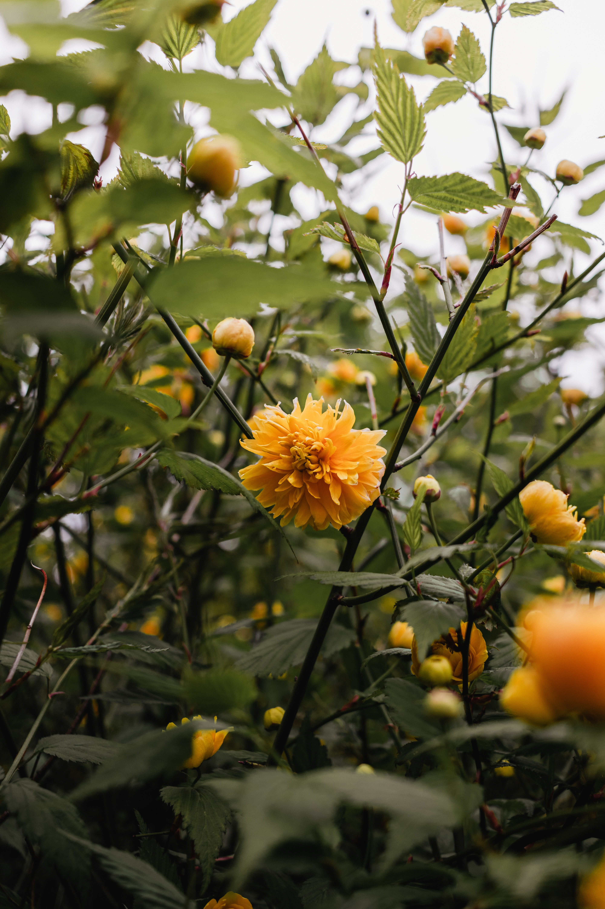
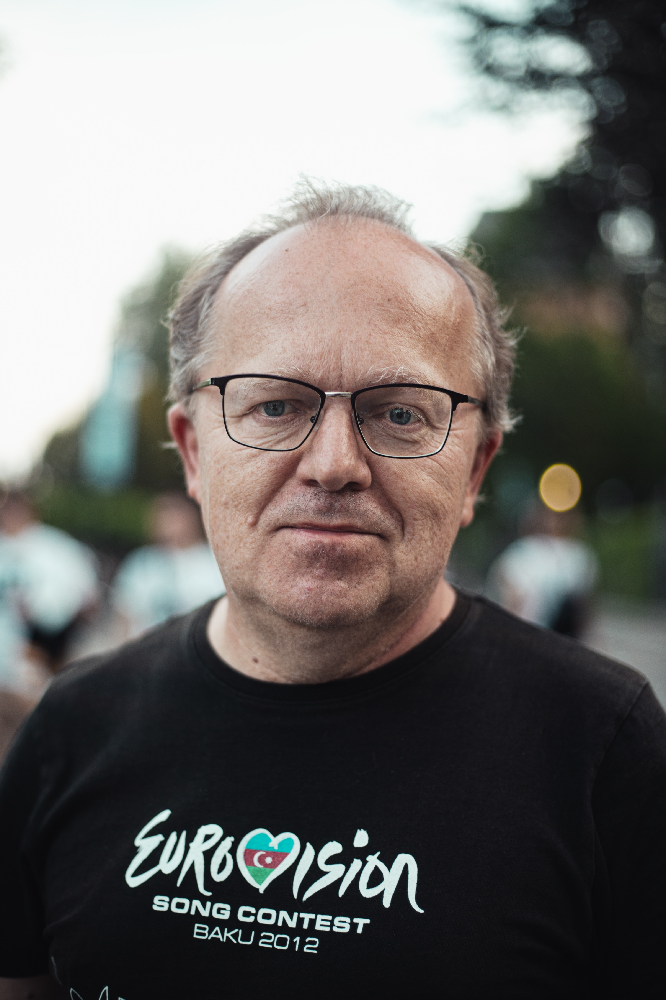
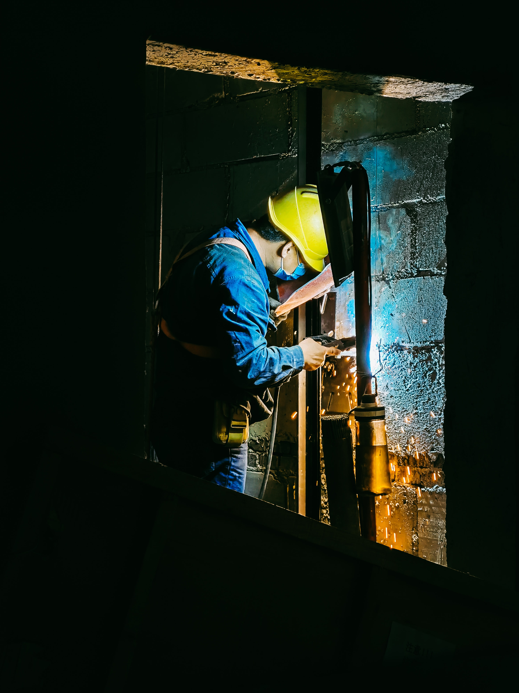

O Museu do Índio, lançará, entre 16 e 20 de maio, uma programação especial para a exposição permanente “Infinity of Nations”. A exposição é composta de uma pequena amostra dos milhões de objetos que o opulento nova-iorquino George Gustav Heye (1874-1957) colecionou durante suas viagens pelas Américas do Norte, do Sul e Central.
Sobre o Projeto
O nome Noxies é um trocadilho com os nomes "Nox" e "Dies", que significam noite e dia no Latim. É uma referência as cores utilizadas no projeto e a função de mudar o tema. Foi utilizado a fonte 'Aldrich' para o logo e a fonte 'Open Sans' para os nomes de usuários e textos. O design do projeto foi desenvolvido por mim utilizando o Figma e você pode acessá-lo clicando na opção "Figma" no menu.
O projeto utiliza a API Random User Generator para gerar os usuários da aba amigos. A API é de livre uso, assim como todas as fotos geradas. Um agradecimento aos criadores Arron Hunt e Keith Armstrong.
As imagens de perfil e das publicações tem livre uso comercial e para projetos pessoais, assim como os ícones utilizados.
A preservação do meio ambiente começa com pequenas atitudes diárias, que fazem toda a diferença. Reciclagem do lixo, economia da água, preservação das florestas, respeitar a fauna, não jogar lixo nos rios,ruas e terrenos baldios. #DiaMundialDoMeioAmbiente


Agradeço a Deus por mais um dia de trabalho🙏🙏🙏
